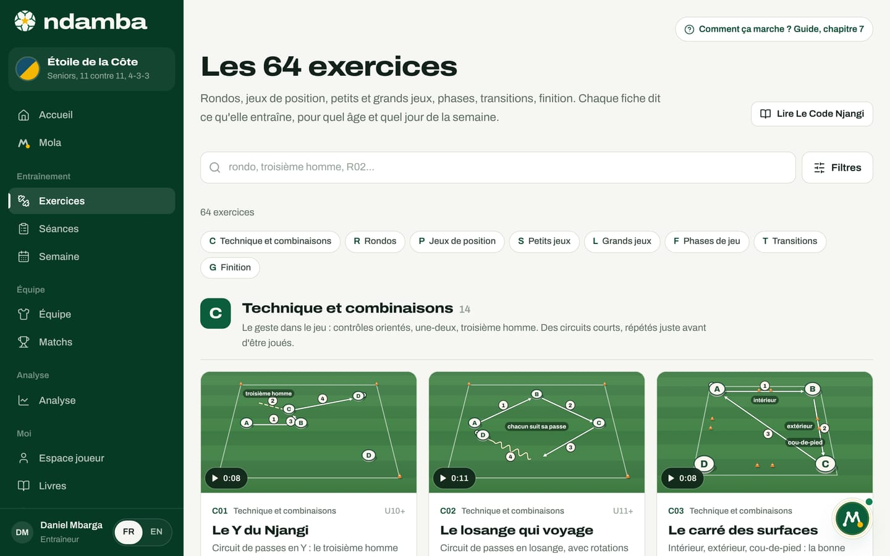
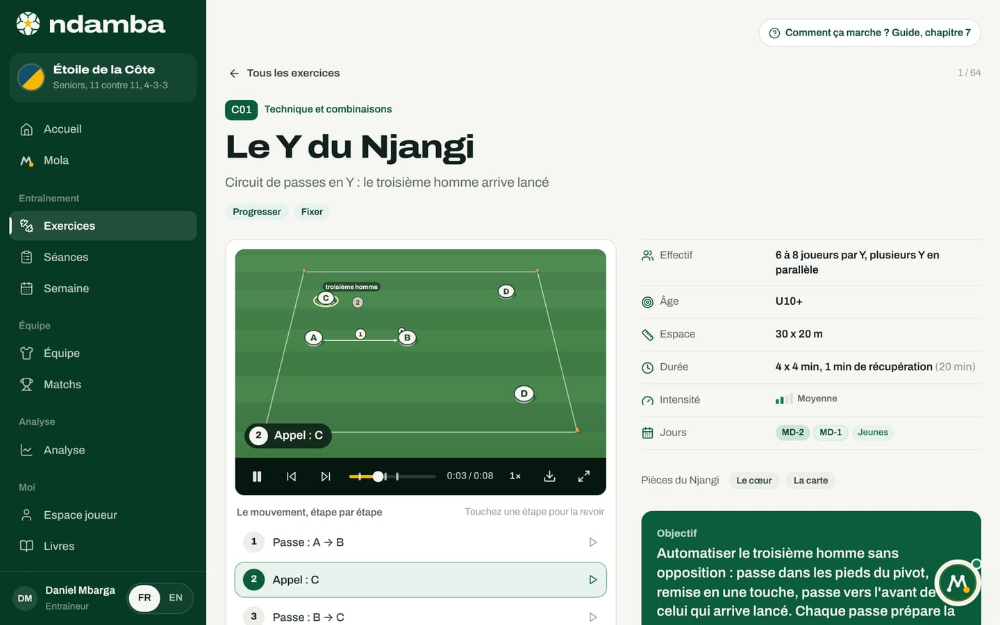
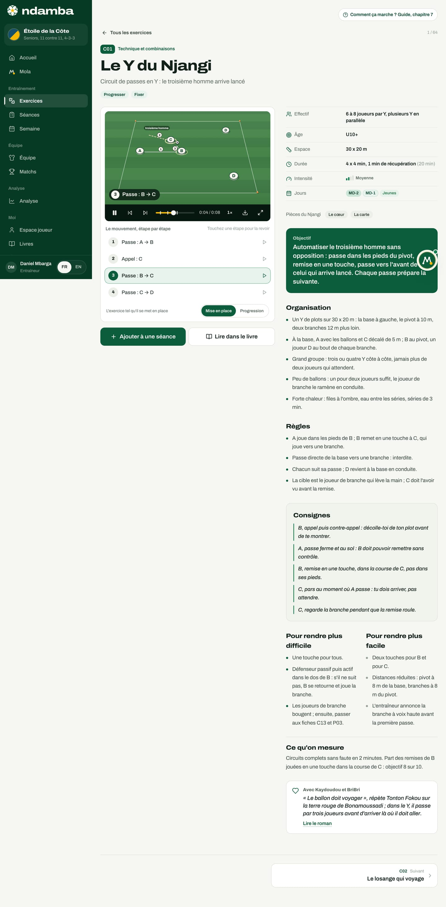

La bibliothèque des 64 exercices
Les 64 fiches de la méthode Njangi, rangées en huit familles, avec leurs intentions, leurs âges, leurs jours et leur intensité. Comment chercher, filtrer, lire une fiche et l’envoyer dans une séance.
11 min de lecture
Un modèle de jeu commun ne tient pas dans un discours. Il tient dans des exercices que tout le monde connaît : l’éducateur d’une académie de Bafoussam, l’adjoint d’un club de Ligue 1 et l’entraîneur d’une sélection de jeunes doivent pouvoir dire « on fait R08 aujourd’hui » et parler de la même chose. C’est le rôle de la bibliothèque des exercices. Elle rassemble les 64 fiches du livre Le Code Njangi, chacune animée comme une courte vidéo, avec leurs règles et leurs consignes, dans le téléphone de l’entraîneur, au bord du terrain. Chaque fiche dit ce qu’elle entraîne, pour quel âge et pour quel jour de la semaine. Et la bibliothèque reste ouverte à tous, sur tous les plans, gratuitement.
Ce que contient la bibliothèque
Les 64 exercices sont rangés en huit familles. Chaque fiche porte un code : une lettre pour la famille, un numéro pour l’ordre. Ce code est le même dans le livre, dans l’application et dans les séances. C’est lui que vous tapez dans la recherche, et c’est lui qui apparaît sur la feuille de séance imprimée.
| Lettre | Famille | Fiches | Ce qu’elle entraîne |
|---|---|---|---|
| C | Technique et combinaisons | 14 | Le geste dans le jeu : contrôles orientés, une-deux, troisième homme, en circuits courts |
| R | Rondos | 8 | Garder le ballon en petit nombre, la première école du Njangi |
| P | Jeux de position | 10 | Occuper l’espace avec intention : couloirs, lignes, troisième homme |
| S | Petits jeux | 8 | Petits effectifs, beaucoup de ballons : lire, décider, marquer |
| L | Grands jeux | 6 | Le modèle de jeu sur un grand terrain, au plus près du match |
| F | Phases de jeu | 6 | Une phase précise du match, répétée avec une vraie opposition |
| T | Transitions | 6 | Reprendre en cinq secondes, regarder devant après la récupération |
| G | Finition | 6 | Entrer dans la zone de finition et tirer avec intention |
Chaque fiche porte aussi cinq repères, toujours les mêmes, qui servent ensuite aux filtres :
- Les intentions. Ce sont les sept mots de la méthode (chapitre 2) : les cinq intentions de la possession, Sortir, Progresser, Fixer, Finir et Respirer, et les deux réflexes sans ballon, Reprendre et Regarder devant. Une fiche en travaille une, deux ou trois, rarement plus.
- L’âge minimum. « U12+ » veut dire : à partir des moins de 12 ans. Les fiches vont de U9+ à U15+. Une fiche reste utile aux âges supérieurs, avec des règles plus exigeantes.
- Les jours de la semaine. MD-4, MD-3, MD-2, MD-1, MD+1 ou Jeunes, les jours où l’exercice trouve naturellement sa place par rapport au match (le chapitre 9 explique ces codes).
- L’intensité. Basse, Moyenne, Haute ou Très haute, affichée par quatre petites barres, et écrite en toutes lettres sur la fiche. La méthode est exigeante : 37 fiches sont hautes, 22 moyennes, 3 basses (des fiches de technique) et 2 très hautes (deux fiches de transition).
- La durée. Les séries et les pauses, par exemple « 4 x 4 min, 1 min de récupération », et le total en minutes, de 14 à 38 minutes selon les fiches.
Ouvrir la bibliothèque
- Dans le menu de gauche, groupe Entraînement, touchez Exercices. Sur téléphone, touchez l’onglet Plus, puis Exercices.
- La page s’ouvre sur le titre Les 64 exercices et le compteur « 64 exercices ».
- Sous la recherche, une rangée de pastilles reprend les huit familles avec leur lettre. Touchez-en une pour descendre directement à cette famille.
- Chaque famille commence par sa lettre, son nom, son nombre de fiches et une phrase qui dit à quoi elle sert. Puis viennent les cartes.


Une carte montre l’essentiel sans l’ouvrir : l’animation, le code, la famille, l’âge minimum, le titre, une ligne d’explication, les deux premières intentions, la durée en minutes, le nombre de joueurs et l’intensité. Au repos, l’animation montre le mouvement terminé, comme la vignette d’une vidéo, avec sa durée dans le coin (0:08). Passez la souris dessus, ou touchez le bouton de lecture sur un téléphone, et les joueurs se mettent en mouvement ; touchez encore pour arrêter. En haut à droite de la page, le bouton Lire Le Code Njangi ouvre le livre entier.
Chercher et filtrer
La recherche accepte un code (R02), un mot du titre (« rondo ») ou une idée (« troisième homme »). Elle cherche dans les titres, les sous-titres et les objectifs, en français et en anglais, et elle ignore les accents. Si vous tapez plusieurs mots, la fiche doit contenir tous ces mots.
Le bouton Filtres ouvre cinq lignes de pastilles : Famille, Intention, Jour, Âge et Intensité. Chaque pastille affiche un petit nombre : le nombre de fiches que vous obtiendriez en la touchant, compte tenu des autres filtres. Une pastille à zéro devient pâle, ce qui évite les impasses. Quand vous choisissez une intention, sa définition s’affiche juste en dessous, par exemple « Reprendre : Cinq secondes de contre-pression après la perte ».
Le filtre Âge fonctionne comme un plafond : la pastille U11 garde les fiches prévues pour les moins de 11 ans et en dessous, jamais une fiche « U13+ ». Les pastilles vont de U9 à Seniors. D’une ligne à l’autre, les filtres se combinent : une intention et un âge donnent les fiches qui respectent les deux. Dans une même ligne, ils s’élargissent : deux intentions cochées montrent les fiches qui travaillent l’une ou l’autre.
Dès qu’un filtre est actif, les familles disparaissent au profit d’une seule grille, avec un compteur, par exemple « 7 exercices trouvés ». Le bouton Filtres affiche le nombre de filtres en cours. Effacer les filtres remet les pastilles à zéro en gardant la recherche ; Voir tous les exercices remet tout à zéro.
Un exemple, tiré d’une vraie question d’entraîneur : « Mon équipe perd le ballon et regarde l’adversaire repartir. »
- Touchez Filtres.
- Dans la ligne Intention, touchez Reprendre. Il reste 7 fiches.
- Dans la ligne Âge, touchez l’âge de votre équipe, par exemple U13. Il en reste 3.
- Dans la ligne Jour, regardez les nombres : ces fiches vont surtout à MD-4 et MD-3, loin du match, car elles sont hautes ou très hautes.
L’ordre de ces trois gestes n’est pas un hasard. Le Code Njangi (chapitre 31) demande de choisir un exercice en posant trois questions, toujours dans le même ordre : quelle intention, quel âge, quel jour. L’intention vient du dernier match ; elle réduit déjà les 64 fiches à une quinzaine. L’âge protège les enfants d’exercices qui ne sont pas faits pour eux. Le jour décide de l’espace et de l’intensité. Les filtres de Ndamba suivent ce raisonnement.
Lire une fiche
Touchez une carte pour ouvrir sa fiche. Toutes les fiches suivent le même ordre, ce qui permet de trouver une information en deux secondes, même sous le soleil de 16 heures.


L’en-tête. Le code (C01), la famille, le titre (« Le Y du Njangi »), une ligne qui résume l’idée, puis les intentions. Les cinq intentions de la possession sont en vert ; les deux réflexes, Reprendre et Regarder devant, sont en gris. En haut à droite, un compteur indique la place de la fiche dans la liste, par exemple « 1 / 64 ».
L’animation. Chaque fiche se joue comme une courte vidéo, sur un terrain vu depuis la tribune. Elle démarre seule à l’ouverture de la fiche, puis tourne en boucle : les joueurs se déplacent, le ballon voyage, et chaque action laisse sa trace sur la pelouse, numérotée dans l’ordre du jeu. Trait blanc plein pour la passe, pointillés pour l’appel, trait ondulé pour la conduite, trait orange épais pour la frappe, petits points pour la pression. L’équipe qui applique le Njangi a des pions blancs cerclés de vert, l’adversaire est en rouge, les joueurs neutres ou jokers en jaune, les gardiens en bleu nuit ou en violet. Quand un appel et une passe vont ensemble, le ballon et le joueur arrivent au même moment, comme sur le terrain : dans C01, C part pendant que B reçoit et prend la remise dans sa course.
Une légende en bas de l’image nomme l’étape en cours (« 3 · Passe : B → C »). Sous le lecteur, Le mouvement, étape par étape reprend toutes les étapes : touchez-en une pour la revoir seule, autant de fois qu’il faut. La barre sous l’image porte les commandes : lecture et pause, étape précédente et étape suivante, la ligne du temps avec un repère par étape, 0,5× pour le ralenti, le plein écran et Télécharger la vidéo (MP4), un fichier léger (environ 70 Ko) à envoyer aux joueurs sur WhatsApp avant la séance. L’animation se termine sur le schéma complet : le placement de départ, toutes les traces et les numéros d’étape.
Pour 19 fiches, une seconde animation montre la progression ou la deuxième phase : passez de l’une à l’autre avec Mise en place et Progression.
La carte d’identité. À droite du schéma : Effectif (combien de joueurs, et souvent combien d’ateliers côte à côte), Âge, Espace (en mètres), Durée (les séries, puis le total en minutes entre parenthèses), Intensité et Jours. Dessous, les Pièces du Njangi de la fiche : le cœur, la raison, les yeux, la carte ou le souffle, les cinq images du roman qui aident à parler du jeu aux enfants.
Le contenu. En descendant, la fiche donne son Objectif dans un bandeau vert, puis l’Organisation (les plots, les équipes, les ballons ; beaucoup de fiches prévoient aussi le cas du grand groupe, du manque de ballons et de la forte chaleur), les Règles, les Consignes, c’est-à-dire les phrases courtes à dire pendant l’exercice, puis deux colonnes : Pour rendre plus difficile et Pour rendre plus facile. La rubrique Ce qu’on mesure dit quoi compter pour savoir si l’exercice a fait son travail. Enfin, l’encadré Avec Kaydoudou et BriBri relie la fiche à une scène du roman, avec le lien Lire le roman.


Les consignes sont écrites comme on parle au bord du terrain : « B, remise en une touche, dans la course de C, pas dans ses pieds. » C’est voulu. Le livre insiste : le joueur en mouvement n’entend qu’une consigne à la fois, et seulement si elle est courte. Quand toutes les catégories d’un club utilisent les mêmes mots, un U13 qui monte en U15 ne réapprend pas une langue.
En bas de la fiche, deux cartes mènent à la fiche précédente et à la suivante. Le lien Tous les exercices, en haut, ramène à la liste avec vos filtres.
Du livre au terrain
Sous l’animation, le bouton Lire dans le livre ouvre la même fiche dans Le Code Njangi, à sa page. Le livre donne le contexte que l’écran n’a pas la place de donner : le chapitre qui explique l’intention, les erreurs fréquentes, la place de l’exercice dans la semaine. Le livre est écrit en français, comme le roman.
Le lien fonctionne dans les deux sens : chaque fiche citée dans le livre par son code, comme R08, se retrouve dans la bibliothèque, et le sommaire du livre se termine par le lien Les 64 exercices dans l’application. L’entraîneur prépare chez lui avec le livre, et retrouve la même fiche dans sa poche le lendemain.
Ajouter un exercice à une séance
Une fiche n’a de valeur que si elle arrive sur le terrain. Le bouton Ajouter à une séance fait ce chemin en deux gestes.
- Sur la fiche, touchez Ajouter à une séance. Une fenêtre s’ouvre avec le titre de l’exercice.
- Pour une nouvelle séance, touchez Nouvelle séance avec cet exercice. Le jour MD et l’intention sont préremplis : le jour est le premier jour d’avant-match de la fiche (par exemple MD-4 pour R08), l’intention est sa première intention. Vérifiez la date et l’équipe, puis touchez Créer la séance.
- Pour une séance déjà prévue, choisissez-la sous Ou dans une séance à venir. La liste montre les douze prochaines séances de l’équipe, avec leur jour MD, leur nombre de blocs et leurs minutes. La mention Bon jour signale une séance dont le jour correspond à ceux de la fiche ; Déjà dedans signale une séance qui contient déjà l’exercice : elle ne réagit plus au toucher, ce qui évite d’ajouter deux fois le même bloc.
- Un message confirme l’ajout, avec le lien Ouvrir pour aller à la séance.
L’exercice entre dans la séance comme un nouveau bloc, à la fin, avec sa durée totale. Le chapitre 8 montre comment le déplacer, changer ses minutes ou lui ajouter une note.
Vous pouvez aussi faire le chemin inverse : depuis une séance, le bouton Ajouter un exercice ouvre la même bibliothèque, déjà filtrée sur le jour de la séance (sauf pour MD+1, qui n’a qu’une fiche : le panneau montre alors toutes les fiches). En bas de la bibliothèque, le lien Composer une séance avec ces exercices mène à la liste des séances. Et si vous préférez demander, Mola répond à des phrases comme « Quels exercices pour mieux reprendre le ballon ? » en proposant trois fiches adaptées à l’âge de votre équipe.
Ce que la bibliothèque construit
Une bibliothèque ne fait pas une équipe. Mais une équipe qui connaît dix fiches par cœur ne perd plus de temps à comprendre l’organisation : toute son attention va au comportement. Le livre le dit simplement : mieux vaut une dizaine d’exercices bien connus qu’une nouveauté chaque jour. Ndamba rend ces fiches communes, au même endroit, avec les mêmes codes et les mêmes mots, du U9 à l’équipe A. C’est la première brique de la continuité qui manque au football africain.